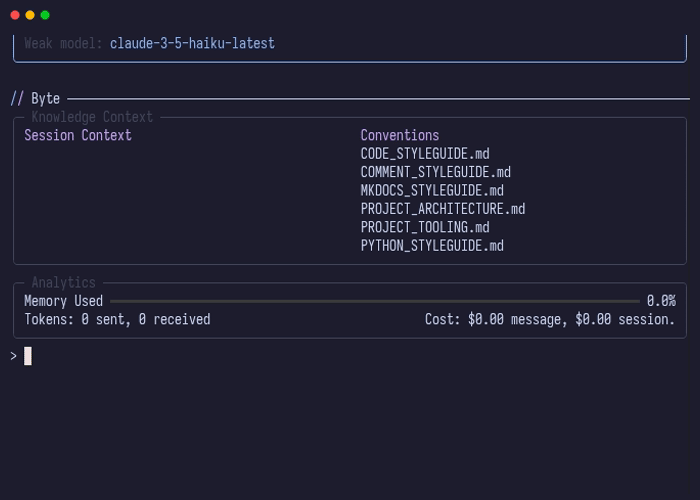

Presets
Presets allow you to save and quickly load predefined configurations of files, conventions, and prompts. They're ideal for switching between different workflows, project contexts, or documentation tasks without manually adding files each time.

Quick Start
Loading a Preset
Load a preset configuration:
Byte will:
- Prompt to clear conversation history (optional)
- Prompt to clear current file context (optional)
- Add configured read-only files to context
- Add configured editable files to context
- Load specified conventions
- Set a default prompt (if configured)
Saving a Preset
Save your current context as a preset:
> /preset:save
Enter a name for this preset: my-workflow
Enter a default prompt for this preset (leave blank to skip):
Preset 'my-workflow' saved successfully
Byte will:
- Prompt for a preset name
- Capture current read-only files
- Capture current editable files
- Capture loaded conventions
- Optionally set a default prompt
- Save the configuration to
.byte/config.yaml
Configuration
Define presets in .byte/config.yaml:
presets:
- id: command
conventions:
- CODE_STYLEGUIDE.md
- PROJECT_ARCHITECTURE.md
read_only_files:
- src/byte/bootstrap.py
- src/byte/container.py
editable_files:
- src/byte/domain/cli/command/new_command.py
prompt: "Create a new command following the existing patterns"
load_on_boot: false
Configuration Options
For complete configuration details, see the Settings Reference.
id (string, required)
- Unique identifier used in
/preset <id>command - Use descriptive names like "command", "docs", or "testing"
read_only_files (array of strings, default: [])
- Files to add as read-only context
- Supports glob patterns like
src/**/*.py - Files are visible to AI but cannot be modified
editable_files (array of strings, default: [])
- Files to add as editable context
- Supports glob patterns
- AI can propose changes to these files
conventions (array of strings, default: [])
- Convention files to load from
.byte/conventions/ - Provide coding standards and style guides to the AI
prompt (string, optional)
- Default prompt text to populate the input field
- Useful for repetitive tasks with similar instructions
load_on_boot (boolean, default: false)
- Automatically load this preset when Byte starts
- Only one preset should have this enabled
Saving Presets
Instead of manually editing .byte/config.yaml, you can save your current context as a preset using the /preset:save command.
How It Works
The save command captures your current workspace state:
> /preset:save
Enter a name for this preset: documentation
Enter a default prompt for this preset (leave blank to skip): Write documentation for
Preset 'documentation' saved successfully
The preset ID is automatically generated from your name (e.g., "My Workflow" becomes "my-workflow").
What Gets Saved
- Read-only files - All files currently in read-only context
- Editable files - All files currently in editable context
- Conventions - All loaded convention files
- Default prompt - Optional prompt text to pre-fill the input
Workflow
- Set up your ideal context with
/addand/read-only - Load relevant conventions
- Run
/preset:saveto capture the configuration - Give it a descriptive name
- Optionally add a default prompt
- The preset is immediately available for use
This is particularly useful when you discover a context configuration that works well and want to reuse it later.
Common Use Cases
Command Development
Create a preset for building new CLI commands:
presets:
- id: command
conventions:
- CODE_STYLEGUIDE.md
- PROJECT_ARCHITECTURE.md
read_only_files:
- src/byte/domain/cli/service/command_registry.py
- src/byte/core/mixins/user_interactive.py
editable_files:
- src/byte/domain/*/command/*.py
Load it when working on commands:
Documentation Writing
Set up a preset for documentation tasks:
presets:
- id: mkdocs
conventions:
- MKDOCS_STYLEGUIDE.md
read_only_files:
- docs/concepts/file-context.md
- docs/concepts/lint.md
editable_files:
- docs/concepts/new-feature.md
prompt: "Using the MKDOCS_STYLEGUIDE and existing docs as examples, document "
The preset includes example docs as reference and sets a helpful default prompt.
Testing Workflow
Configure a preset for test development:
presets:
- id: testing
conventions:
- TESTING_STYLEGUIDE.md
read_only_files:
- src/byte/domain/*/service/*.py
editable_files:
- tests/**/*_test.py
prompt: "Write tests for "
Workflow Integration
History Management
When loading a preset, you can optionally clear conversation history:
Choose Yes to start fresh with the new context, or No to preserve previous conversation while switching files.
Context Management
You can also clear the current file context:
Choose Yes to replace all files with the preset configuration, or No to add preset files to existing context.
Auto-Loading
Set load_on_boot: true to automatically load a preset when Byte starts:
This is useful for projects where you always work with the same initial context.
Related Concepts
- File Context - Understanding file modes and context management
- Conventions - Project-specific coding standards
- Settings Reference - Complete configuration options